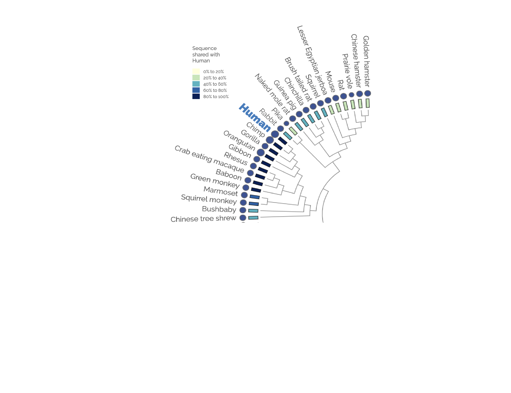
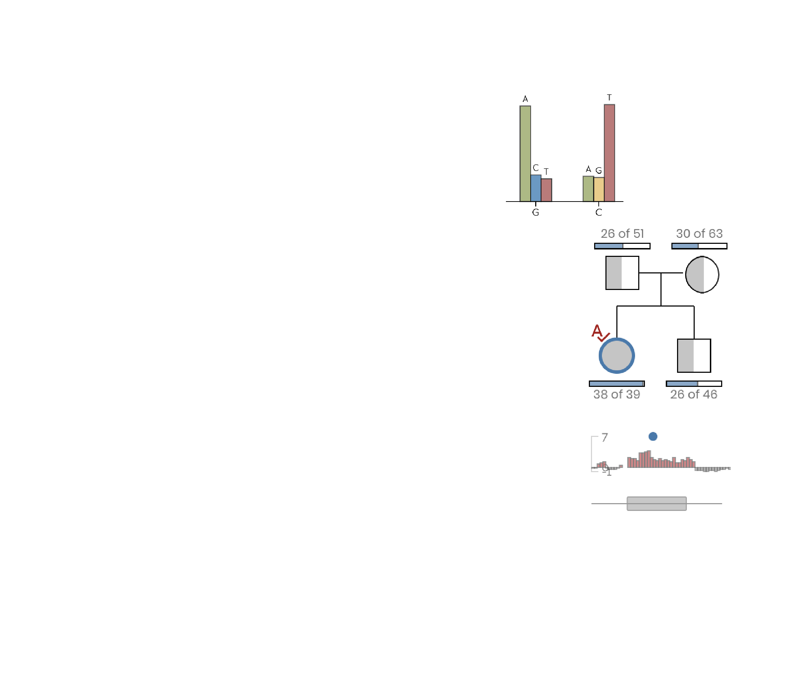
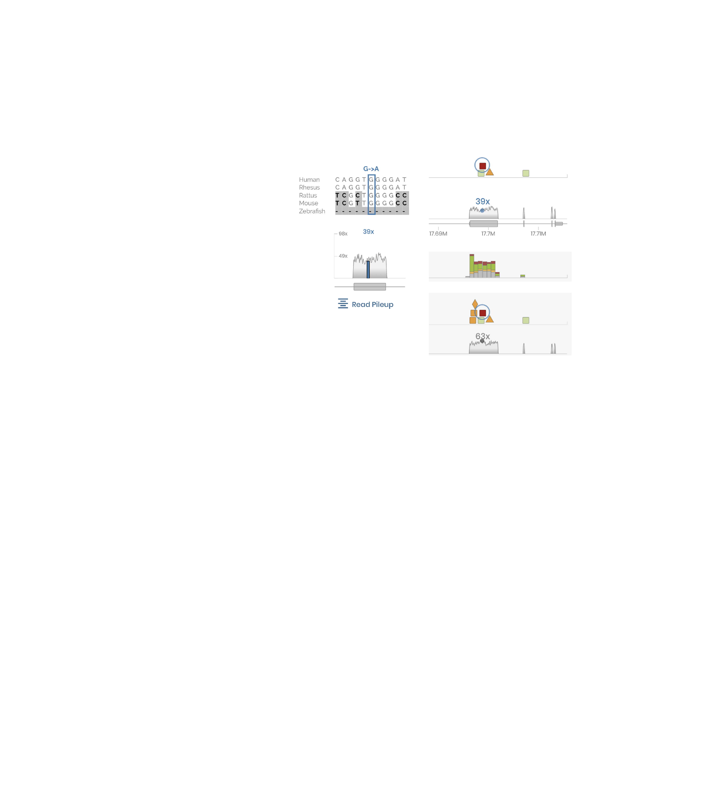
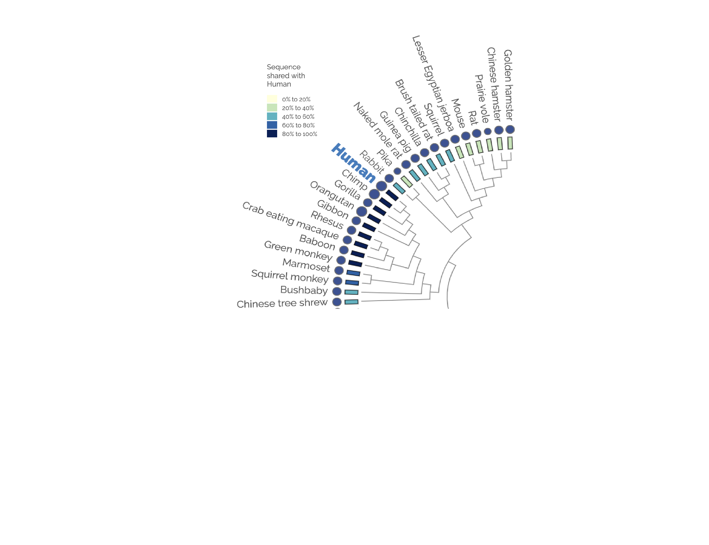
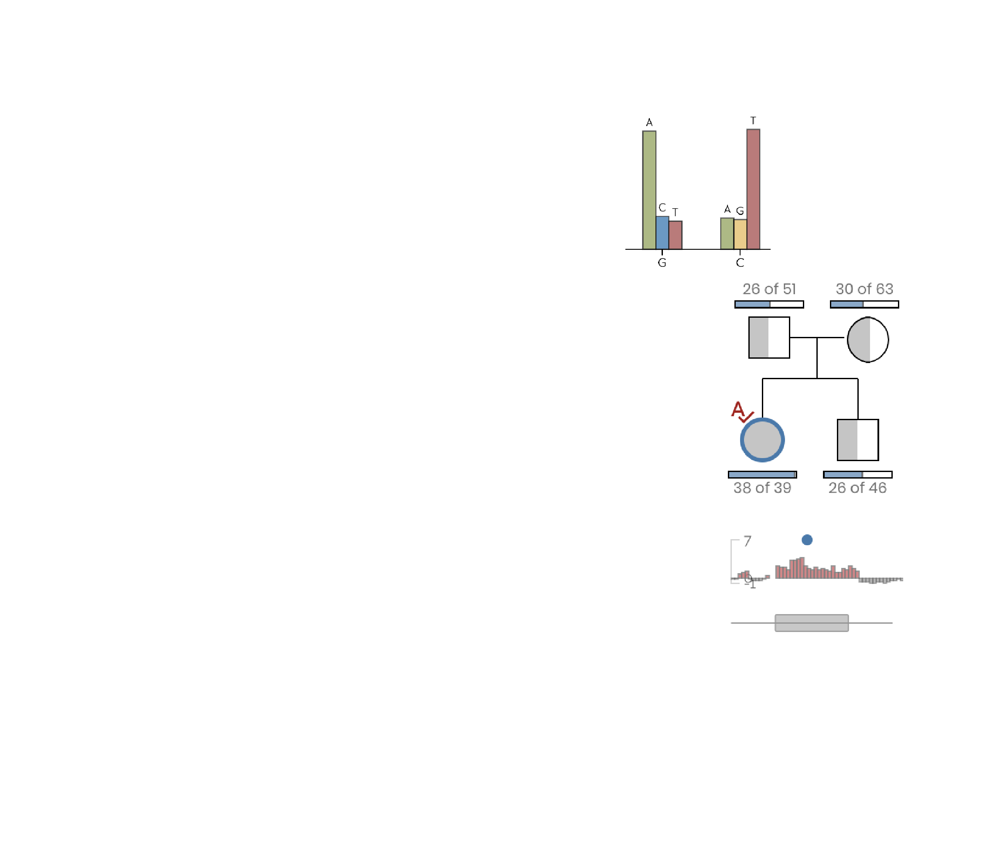
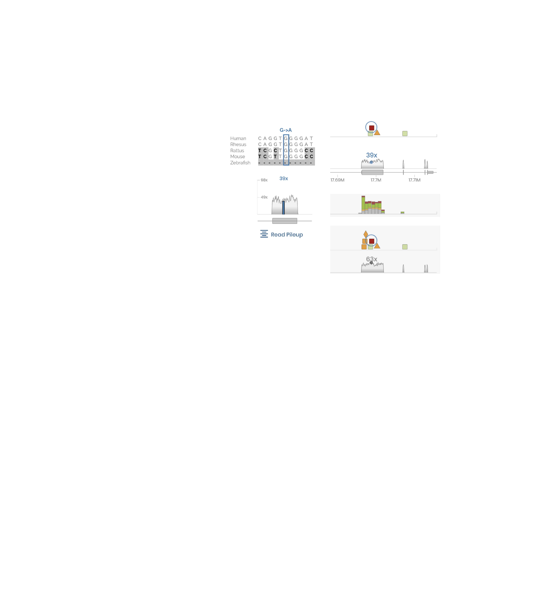
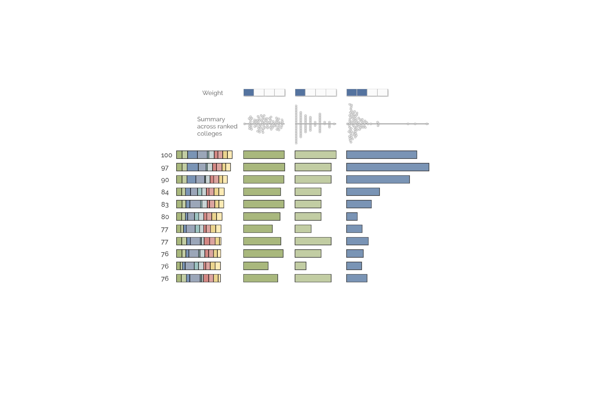
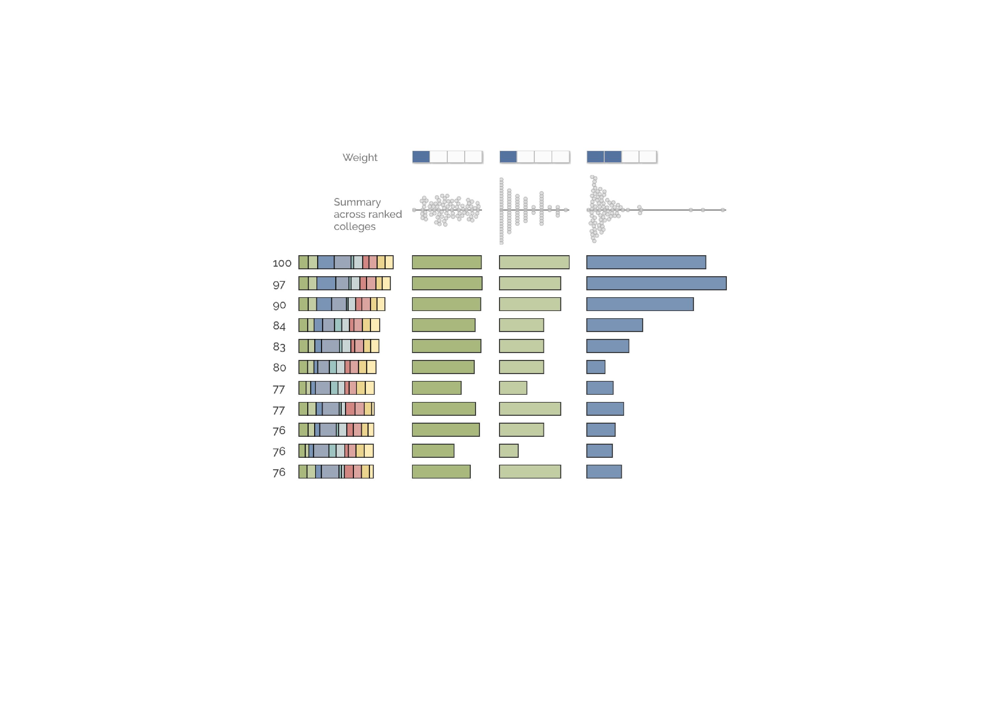

hidden
-
 
 
Bringing Data
To Life
I work in the computational biology lab (marthlab.org) where I develop web applications for clinicians to analyze genomic data in precision medicine. My current focus is real-time genomic analysis and data viz.
My CV
I have worked as a software developer for 20+ years. My first job was with Intel during the booming mid 80s and early 90s. After that, I moved to Salt Lake City Utah. My first dream job was working on the Human Genome Project in an academic lab at the University of Utah. Here I could combine my love of biology with my love of software. Once I got a taste of this, I never looked back. I spent 10 years working at the Huntsman Cancer Institute, developing a laboratory management system and a genomic data repository called GNomEx.
Eight years ago, I joined a computational biology lab at the University of Utah, working on real-time analysis and web-based visualizations (iobio.io). This job challenges and rewards me in ways I never imagined. I work on a multi-disciplinary team with a great group of people. Working in the lab has allowed me to learn about many fascinating bioinformatics projects — problems that demand rigorous statistical approaches, innovative algorithms, and large-scale data processing.
In August 2021, I graduated with a Masters in Data Science from UC Berkeley. I have had the privilege of working with talented students and learning from experts in the field of Data Science and becoming part of a thriving student community that spans the globe. I have gained insights and expertise in data science through this rigorous, innovative curriculum and I am eager to put these new skills to use in the bioinformatics and precision medicine domains. I am a teacher's assistant in the MIDS
program for the Data Visualization course.
My current work focus is developing a deep learning model for predicting cancer drug response.
Creating interactive visualizations that invite exploration, provide context, and illuminate key patterns and relationships.
Building tools that perform real-time analysis on genomic data, allowing researchers to interrogate and understand complex data.
Harnessing the power and big data, machine learning algorithms, and data visualization to produce models that solve scientific problems.
Working with clinicians and researchers to improve clinical outcomes by tailoring treatment based on genomics and transcriptomics.
The majority of genetic disorders are rare. I write software tools that help clinicians and geneticists discover causative mutations. My work wraps bioinformatics tools in web-services that integrate and analyze genomic data. These services stream manageable chunks of information to deliver real-time intuitive data visualizations to clinicians, helping them investigate mutations and discover underlying genetic causes of these rare diseases.
My father died from Cancer of Unknown Primary. With the remarkable strides made in molecular biology and bioinformatics analysis, including, single cell RNA sequencing, subclone analysis, and organoid drug analysis, my hope is that cancer patients will face less unknowns during treatment and benefit from significantly improved outcomes.
I create web visualizations using D3 based on real-time analysis streamed from servers housing large, complex binformatics data. I eagerly approach every new data source and analysis result with a beginner's mindset. I try to design the best visualization given the data and problem at hand; one that conveys the information succintly while engaging the viewer to investigate and explore for deeper insights.
I cherish working with scientists, engineers, clinicians, pathologists, and mathematicians on complicated problems that demand specialized skills and different perspectives. I feel priviledged to work with smart, hard-working, passionate people that choose to devote their life's work to solving problems that help humankind.
Variant discovery and prioritization delivered in real-time with intuitive visualizations.
Try itUnderstand the overall quality and composition using real-time sampling on large bioinformatics datasets.
Try itA diagnostic workflow for variant inspection and discovery that allows the clinician research to evaluation dataset quality, generate phenotype-to-gene associations, and review and prioritize variants.
Try itDeveloped for the Natural History Museum of Utah for the Smithsonion Human Genome Exhibit, this user-friendly web app guides the user through the fundamental concepts of genetic mutations.
Try itThis D3 data visualization shows the phylogentic tree in a radial tree diagram, conveying relateness across Vertabrates.
Try itThis visualization ranks colleges across a number of hetergeneous features, allowing for in-depth comparisons beyone opaque college rankings.
Try itThis app was developed as the final project for UC Berkeley MIDS Experiments and Causality class. Our randomized control trial measured the extent to which novel data visualizations impact a person’s emotional response to the COVID-19 crisis in the U.S. Here is the report on our findings.
Try itScreen Ahead Rx is a tool designed for individualized cancer treatment. The model predicts the anti-cancer drugs that will elicit an "exceptional response" in the cancer patient, based on the tumor's genomic profile and the drug's chemical structure. The Screen Ahead Rx team hopes to both improve individual cancer outcomes and seek potential new cancer treatments by employing novel machine learning techniques.
Try itBMC Medical Genomics 12:190
PMID: 31829207
NPJ Genom Med. 2018 Aug 13;3:22. doi: 10.1038/s41525-018-0061-8. eCollection 2018
PMCID: PMC6089881
Nat Methods. 2018 Jan 8. doi: 10.1038/nmeth.4556. [Epub ahead of print]
PMID: 29309061

J Clin Transl Sci. 2017 Dec;1(6):381-386. doi: 10.1017/cts.2017.311.
PMID: 29707261
Genome Biol. 2016 May 26;17(1):111. doi: 10.1186/s13059-016-0969-1
PMID: 27224977
Nat Methods. 2014 Dec;11(12):1189. doi: 10.1038/nmeth.3174.
PMID: 25423016
BMC Bioinformatics. 2010 Dec;11:455.
PMID: 20828407